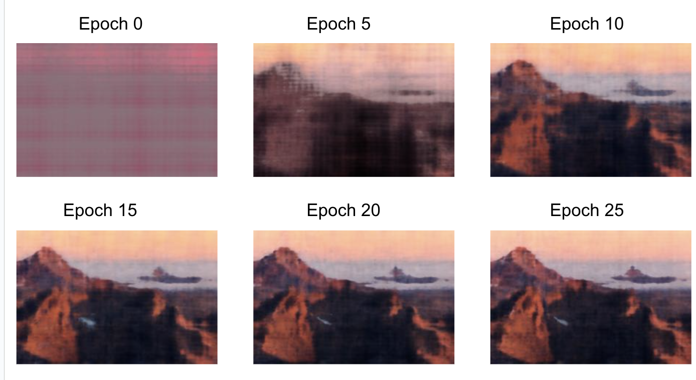
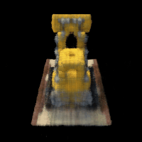

This project was all about training and using neural radiance fields (NeRFs) in both 2D and 3D. Neural Radiance Fields are a way to represent scenes using a neural network. They are able to capture the appearance of a scene from a single or multiple images. We can then use these NeRFs to generate new views of a particular scene, even if we didn't previously have an image of that view.
In the first part of the project, we were tasked with fitting a neural field to a 2D image. Instead of storing pixel values directly (as in a typical image), NeRF maps 2D pixel coordinates (x,y) to the corresponding RGB color values (r,g,b) using a neural network. This means the image is represented as a function rather than a grid of discrete pixel values.
To better capture fine details and high-frequency patterns, NeRF applies a sinusoidal positional encoding to the pixel coordinates (x,y). This expands the input dimensions, allowing the neural network to learn complex patterns across different spatial scales.
In the first run, we train a NeRF on an image of a fox. We can visualize the training process by plotting the predicted images across iterations, watching the predictions improve as the model continues to train. We can below see the results through the 25 epochs of training:
The hyperparameters we chose here were a learning rate of 1e-2, max frequency L of 10 for positional encoding, a model with 5 layers in total (4 fully connected layers with ReLU activations and a final layer with a Sigmoid activation), and an input channel size of 42 to the multi-layer perceptron. Following, we can see how the mean-squared error loss decreases over the course of training, and the peak signal-to-noise ratio (PSNR) increases.
In the second run, we applied the same process as in Run 1, except we changed a few hyperparameter values. We used a learning rate of 2e-2, and max frequency L of 7 for positional encoding. (This consequently also changes the input channel size to 30 for the multi-layer perceptron.) We can see the results, and the training curves below:
As we can see from the curves, this run leads to the PSNR converging to a lower value than with the default hyperparameters. A lower max frequency L may lead to the model not being able to capture fine details as well, leading to a lower PSNR. However, to truly isolate this as the cause, we would do another run where the only hyperparameter changed would be L, using the same learning rate as from the default run (Run 1).
Finally, we run the same process as in Run 1, except we changed the base image to a different image, one of a scene with mountains. Results follow.
We can see that the quality of the output images of the Run 3 model are worse than the Run 1 model. this is because the quality of the input image itself is not as good as the fox image, meaning the model isn't able to produce fine details.
In the second part of the project, we make a 3D NeRF from a set of images of a scene from different angles. We can then use this NeRF to generate new views of the scene from different angles. The images are of a LEGO tractor.
First, we write the functions `transform` (camera to world), `pixel_to_camera`, and `pixel_to_ray`.
The transformations between camera, pixel, and ray coordinates are crucial for connecting 2D image data to the 3D scene representation in NeRF. The Camera to World transformation aligns all images in a global spatial frame, ensuring consistency across views. Pixel to Camera and Pixel to Ray map image pixels to spatial rays, defining the origin and direction of rays for sampling points in the 3D space. These rays are key for volume rendering, where the NeRF predicts colors and densities along them to generate realistic 3D reconstructions and novel views. Without these steps, the model could not learn a consistent 3D representation from multi-view images.
In this part, we establish how 3d points are sampled along rays, enabling the model to learn a continuous representation of the 3D scene. Sampling points along these rays discretizes the 3D space, providing input coordinates for the NeRF model to predict density and color values. Additionally, we also enable perturbations during training, which ensures a more complete exploration of the 3D space and combats overfitting.
Here, we integrate all the previous steps into a cohesive data pipeline for training. Unlike Part 1, where sampling focused on single images, this part extends to multiview images and converts sampled pixel coordinates into 3D rays with origins, directions, and associated colors. Below, we have visualizations of the cameras, rays, and samples resulting from the code samples provided to us.
Here, we define the NeRF model, which represents the core of the NeRF project, as it focuses on building and training the neural network to model the 3D scene. In this step, the model predicts density and color for sampled 3D points along rays, enabling the representation of both the geometry and appearance of the scene.
The `volrend` function we write connects the NeRF model's density and color predictions to the final rendered image. The volume rendering equation integrates contributions from all sampled points along each ray, using their predicted densities to model the probability of light being absorbed or scattered. This results in a composite color for each pixel in the image
Below, we can see the predicted image of the LEGO truck from a certain view at different training steps throughout the process. We can see the image becoming more clear with more training steps:
Additionally, we can see the training loss and PSNR curves for the training and validation sets:
Finally, we can see a GIF of the image based on the test set:
Instead of having the default black background, we were able to modify the `volrend` function to have a non-black background. We did this by identifying the points where the sum of the weights are 0 (aka the point is not part of the actual scene), and setting the color of that point to a different background color. We can see the results below: